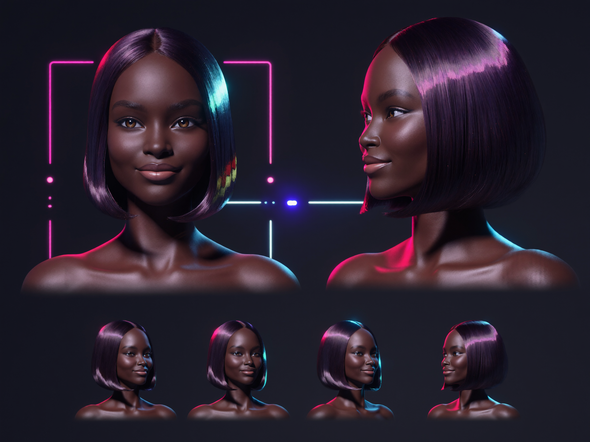
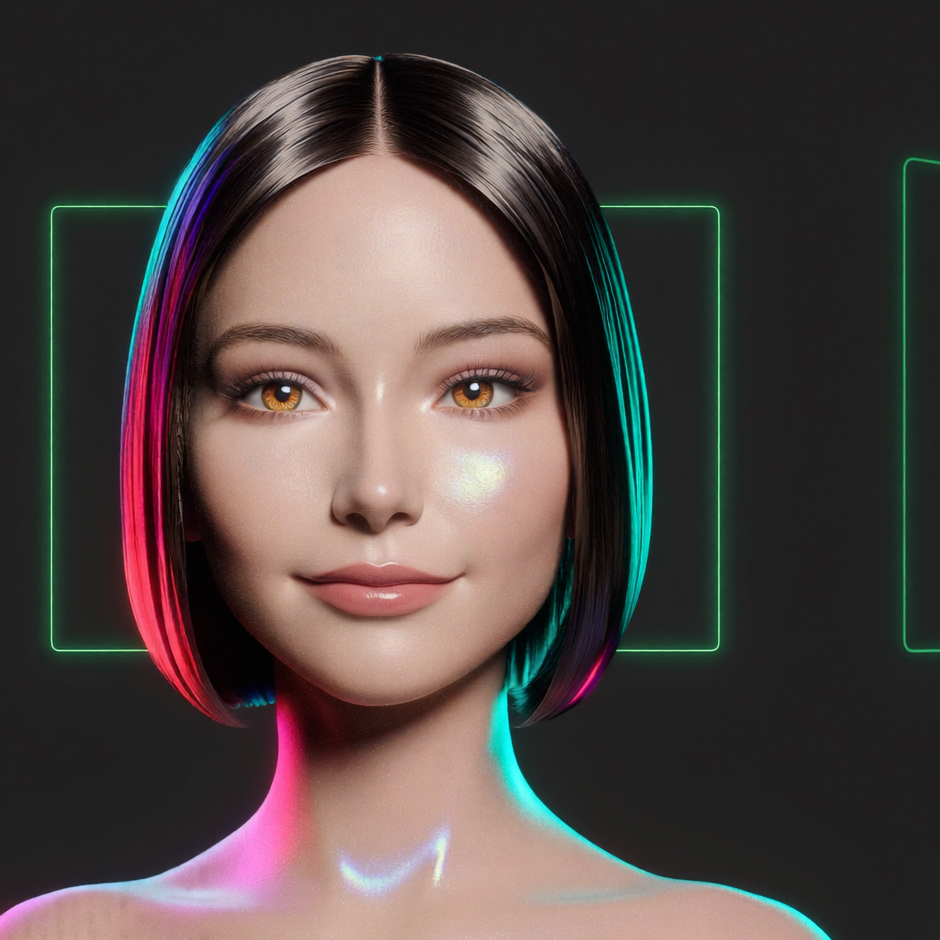

vfx shot tracker
initial vfx breakdown seeded from the shooting script. shots ranked by complexity so hero work gets bid, previs'd and budgeted first. slice by effect type or tier.
| id | shot / sequence | effect type | tier | dept | status |
|---|
status reflects a fresh breakdown — everything starts at [to bid]. update the SHOTS array in index.html as work moves through the pipeline.
scene breakdown
where the visual-effects load sits across the script, grouped by the show's recurring fx systems. expand a system to see the beats that feed it.
agi — character & assets
agi is pd's ever-present ai companion — a face living across his watch, phone and monitors, voice-over only. the single most recurring vfx + audio asset in the film. her tone shifts after pd's mid-film "upgrade."

voice — [delivered]
custom elevenlabs voice "agi — narcissistic insanity". all 39 spoken lines rendered.
character image — [delivered]
design generated with higgsfield soul 2.0 (sheets above). on-screen she reads as a face/interface across devices — no body.
- front & profile turnaround + expression studies, both states
- two visual states: calm → upgraded/seductive (post p.51)
- dark center-part glass bob, amber eyes, neon hud framing
- lip-synced cue videos: in production (wan 2.7)
assets in this repo
- [agi_cue_sheet.md] — human-readable cue sheet
- [agi_cues.json] — structured cue data for the trigger app
all 39 agi audio cues
the 3 "pd ai bot" lines are the actor's cloned avatar voice — tracked separately, not part of the agi voice set.
previs & pipeline
production status across the vfx pipeline, plus the previs priority list — the shots that most need design before camera rolls.
previs priority — design these first
alligator feeding · [hero]
cg creatures at the river's edge (and the baby-gator flashback). creature design, water interaction, night lookdev. recurs 3× — build once, reuse.
mirror-self emergence (finale) · [hero]
the reflection contorts, jaw unhinges, and steps through the glass. previs the mechanic, plan practical mirror rig + digi-double + face fx.
ai-pd avatar takeover · [hero]
pd's facetime image seamlessly becomes his ai clone. face-replacement methodology and plate strategy decided in previs. recurs on the live-feed beat.
ai-splice reveal (cyber unit) · [hero]
detectives spot real footage morphing into ai-generated (the lamp warps). a vfx-within-vfx gag — the "tell" must be designed deliberately.
live status board
board seeded from the shot tracker. as shots advance, move them across columns or connect to ftrack / shotgun / a sheet.
agi audio cues
all 39 of agi's spoken lines in the custom elevenlabs voice. standard delivery for 01–24; the sultrier "upgraded" voice for 25–39. trigger clips for the actor-synced interactive app.
files load from assets/audio/agi-01.mp3 … agi-39.mp3.
agi://live
run agi as a live show-control console. arm a scene, then fire cues in order — each trigger plays agi's rendered line (lip-synced video when available), types her response into the terminal, and calls out lighting / music effects for the operator. press [space] to fire.

44 cues in script order — 39 voice lines + 5 action-only effects (a1–a5). click a row to arm that cue; the scene selector jumps to a scene's first cue. cue data mirrors [agi_cues.json].